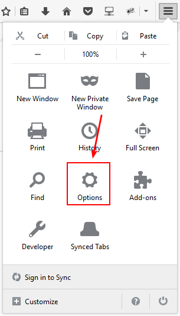
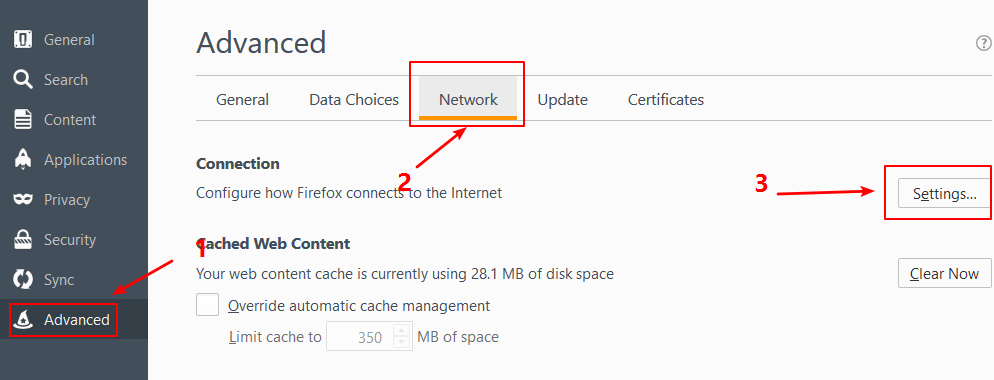
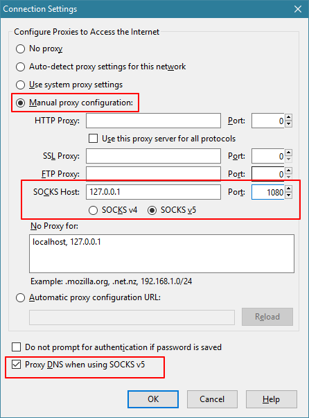

1. 安装
本节将说明如何安装 V2Ray，内容包含服务器安装和客户端安装。需要注意的是，与 Shadowsocks 不同，V2Ray 不区分服务器版和客户端版，也就是说在服务器和客户端运行的 V2Ray 是同一个软件，区别只是配置文件的不同。因此 V2Ray 的安装在服务器和客户端上是一样的，但是通常情况下 VPS 使用的是 Linux 而 PC 使用的是 Windows，因此本章默认服务器为 Linux VPS，客户端为 Windows PC。如果你的 PC 使用的是 Linux 操作系统，那么请参考服务器安装。如果你的 PC 使用的是 MacOS 或者 VPS 使用的是 Windows，这两者请你自行研究怎么安装吧，安装完了跳过本节继续往下看。
1.1. 时间校准
对于 V2Ray，它的验证方式包含时间，就算是配置没有任何问题，如果时间不正确，也无法连接 V2Ray 服务器的，服务器会认为你这是不合法的请求。所以系统时间一定要正确，只要保证时间误差在一分钟之内就没问题。
对于 VPS(Linux) 可以执行命令 date -R 查看时间：
$ date -R
Sun, 22 Jan 2017 10:10:36 -0500
输出结果中的 -0500 代表的是时区为西 5 区，如果转换成东 8 区时间则为 2017-01-22 23:10:36。
如果时间不准确，可以使用 date --set 修改时间：
$ sudo date --set="2017-01-22 16:16:23"
Sun 22 Jan 16:16:23 GMT 2017
对 VPS 的时间校准之后接着是个人电脑，如何修改电脑上的时间我想不必我多说了。
无论是 VPS 还是个人电脑，时区是什么无所谓，因为 V2Ray 会自动转换时区，但是时间一定要准确。
1.2. 客户端安装
点这里下载 V2Ray 的 Windows 压缩包，如果是 32 位系统，下载 v2ray-windows-32.zip，如果是 64 位系统，下载 v2ray-windows-64.zip。解压之后会有 v2ray.exe 和 config.json 这两个文件，config.json 已经设置好 V2Ray 的官方服务器，也就是说你可以不自己搭建服务器而直接使用 V2Ray 提供的服务器科学上网。这个时候双击运行 v2ray.exe，这个时候可以通过 config.json 设置好的 VPS 科学上网。

但是现在还不能科学上网，因为 V2Ray 将所有选择权交给用户，它不会自动帮你设置系统代理，因此还需要在浏览器里设置代理。以火狐（Firefox）为例，点菜单 -> 选项 -> 高级 -> 设置 -> 手动代理设置，在 SOCKS Host 填上 127.0.0.1，后面的 Port 填 1080，再勾上使用 SOCKS v5 时代理 DNS (这个勾选项在旧的版本里叫做远程 DNS)。操作图见下：



1.3. 服务器安装
在 Linux 操作系统， V2Ray 的安装有一键脚本安装、手动安装、编译安装 3 种方式，选择其中一种即可。推荐使用一键脚本安装，该脚本由 V2Ray 官方提供。
1.3.1. 使用一键安装脚本安装
V2Ray 官方提供了一个一键安装脚本，这个脚本可以在 Debian 系列或者支持 Systemd 的 Linux 操作系统使用。比如说，Centos 6.x 非 debian系也不带有 Systemd，因此在 CentOS 6.x 不可使用官方提供的脚本安装 V2Ray，但是 CentOS 7.x 内置有 Systemd 的所以可以使用脚本安装；Ubuntu 14.04 虽然没有 Systemd，但属于 Debian 系列，同样可以使用这个脚本。
现在市面上绝大多数 Linux 发行版的最新版本都内置了 Systemd，在支持 Systemd 的系统中，V2Ray 的安装脚本会添加一个 Systemd 的单元文件可以使得开机后自动运行软件，以及当 V2Ray 意外停止运行时自动启动 V2Ray（应该类似于 supervisord 托管服务），推荐用户使用带 Systemd 的系统。
本指南默认使用 Debian 8 系统，带 Systemd。
首先需要安装 curl，Debian 执行
$ sudo apt-get install curl
如果是 CentOS，则执行以下命令安装 curl:
$ sudo yum install curl
然后使用一键脚本安装 V2Ray:
$ curl https://install.direct/go.sh | sudo bash
% Total % Received % Xferd Average Speed Time Time Time Current
Dload Upload Total Spent Left Speed
100 4915 100 4915 0 0 293 0 0:00:16 0:00:16 --:--:-- 791
bash: line 88: /usr/bin/v2ray/v2ray: No such file or directory
Installing V2Ray v2.12.1 on x86_64
Downloading https://github.com/v2ray/v2ray-core/releases/download/v2.12.1/v2ray-linux-64.zip directly.
% Total % Received % Xferd Average Speed Time Time Time Current
Dload Upload Total Spent Left Speed
100 595 0 595 0 0 446 0 --:--:-- 0:00:01 --:--:-- 447
100 2358k 100 2358k 0 0 270k 0 0:00:08 0:00:08 --:--:-- 609k
Extracting V2Ray package to /tmp/v2ray.
Archive: /tmp/v2ray/v2ray.zip
inflating: /tmp/v2ray/v2ray-v2.12.1-linux-64/systemd/v2ray.service
inflating: /tmp/v2ray/v2ray-v2.12.1-linux-64/systemv/v2ray
inflating: /tmp/v2ray/v2ray-v2.12.1-linux-64/v2ray
inflating: /tmp/v2ray/v2ray-v2.12.1-linux-64/vpoint_socks_vmess.json
inflating: /tmp/v2ray/v2ray-v2.12.1-linux-64/vpoint_vmess_freedom.json
PORT:36832
UUID:65d5fad7-af42-4ee9-b5df-a2d0998e8cd7
V2Ray v2.12.1 is installed.
看到类似于这样的输出算安装成功了，但是注意因为脚本没有检测命令出错的情况，有时候哪怕没有安装成功最后也会显示 V2Ray v2.X is installed，因此看到这句话不代表成功安装了，主要还是看安装的整个过程有没有错误提示。也可以执行 systemctl status v2ray 查看 V2Ray 的状态判断是否安装成功，当有类似下面的信息就代表安装成功了：
$ sudo systemctl status v2ray
● v2ray.service - V2Ray Service
Loaded: loaded (/lib/systemd/system/v2ray.service; enabled)
Active: inactive (dead)
在安装完 V2Ray 之后，修改配置文件重启 V2Ray 即可，配置文件路径为 /etc/v2ray/config.json。
对于支持 Systemd 的操作系统，可以使用以下命令启动 V2Ray:
$ sudo systemctl start v2ray
停止运行 V2Ray：
$ sudo systemctl stop v2ray
重启 V2Ray:
$ sudo systemctl restart v2ray
对于不支持 Systemd 的操作系统，运行、停止运行和重启 V2Ray 的命令分别是：
$ sudo v2ray start
$ sudo v2ray stop
$ sudo v2ray restart
在首次安装完成之后， V2Ray 不会自动启动，需要手动运行上述启动命令。而在已经运行 V2Ray 的 VPS 上再次执行安装脚本，安装脚本会自动停止 V2Ray 进程，升级 V2Ray 程序，然后自动运行 V2Ray。在升级过程中，配置文件不会被修改。
1.3.2. 手动安装
以 64 位系统 V2Ray v2.12.1 为例，其它版本请看 Releases。 通过 wget 下载 V2Ray:
$ wget https://github.com/v2ray/v2ray-core/releases/download/v2.12.1/v2ray-linux-64.zip
解压 V2Ray：
$ unzip v2ray-linux-64.zip
Archive: v2ray-linux-64.zip
inflating: v2ray-v2.12.1-linux-64/systemd/v2ray.service
inflating: v2ray-v2.12.1-linux-64/systemv/v2ray
inflating: v2ray-v2.12.1-linux-64/v2ray
inflating: v2ray-v2.12.1-linux-64/vpoint_socks_vmess.json
inflating: v2ray-v2.12.1-linux-64/vpoint_vmess_freedom.json
上述命令会将 V2Ray 解压到当前目录下，可以看得出解压出来的是名字为 v2ray-v2.12.1-linux-64 的文件夹，V2Ray 就在这个文件夹内，所以先进入该文件夹：
$ cd v2ray-v2.12.1-linux-64
然后给 V2Ray 赋予执行权限：
$ chmod +x v2ray
看一下 V2Ray 版本：
$ ./v2ray -version
V2Ray v2.12.1 (One for all) 20161226
An unified platform for anti-censorship.
在不指定配置文件的情况下，V2Ray 默认配置文件的是当前目录的 config.json，也可手动指定，如指定配置文件是 /tmp/v2rayconfig.json 则执行：
$ ./v2ray -config /tmp/v2rayconfig.json
1.3.3. 编译安装
请参考这里
本小节讲了如何安装 V2Ray，关于如何配置请看后文。